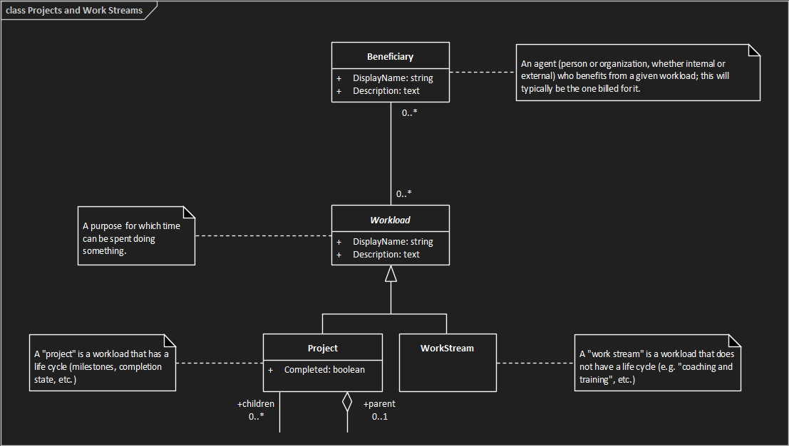

Projects and Work Streams
TimeTracker3 uses Projects and Work Streams to record the goals to which
people dedicate their working hours.

Projects
A Project is an achievable goal which, in order to achieve it, requires some
effort dedicated to it. TimeTracker3 does not concern itself with project
management (which can be performed by any means chosen by a particular
organisation or team) - just with tracking the time and effort dedicated to each
Project with as much accuracy as possible.
For a Project, the TimeTracker3 records:
- Name - a short descriptive name identifying the
specific Project.
- Description - a longer description, providing
additional information on what a specific Project is all about. Just what to
record depends on the organisation and/or team which works on the project,
but can include things like links to the Project's Git repository or Wiki
pages, elaborated project statement, etc.
- Parent/child links - TimeTracker3 organises Projects
into a hierarchy, where higher-level projects can be sub-divided into
sub-projects, and so on. This allows e.g. integration of effort spent on
smaller sub-projects to get an accurate picture on how well the higher-level
projects fare.
- Completion status - a Project marked "completed" will
normally disallow booking any more working time towards it. TimeTracker3 can
be configured to hide these "completed" projects from view, thus allowing
the user to see a clearer picture of what is currently underway.
- Activity links - an Activity (or a Task) can be
assigned to a specific Project. This means that anyone working on that
Activity or Task contributes to the Project in question.
Work streams
Like a Project, a Work Stream is a goal towards which time and effort can be
spent. Unlike Projects, Work Streams do not have a "completion status", but
record the related effort on an ongoing basis. Also, unlike Projects, Work
Streams do not form a hierarchy but instead are treated as a flat list of
ongoing goals,
Similarly to Projects, Work Streams can be associated with Activities and
Tasks, allowing to later see just how much effort was spent contributing to a
specific Work Stream.
See also: -